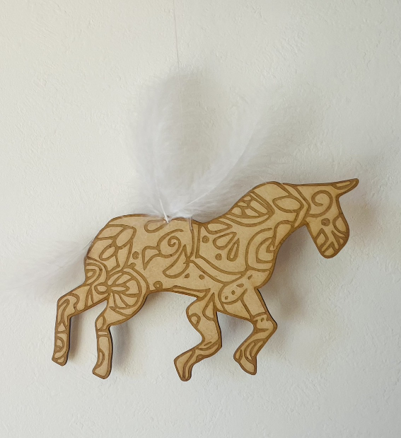
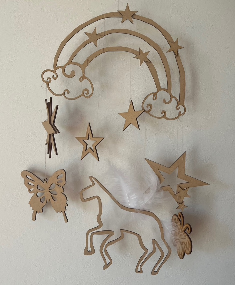
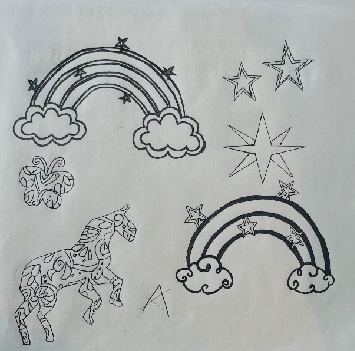
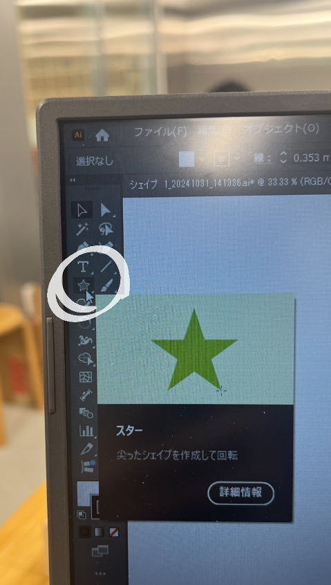
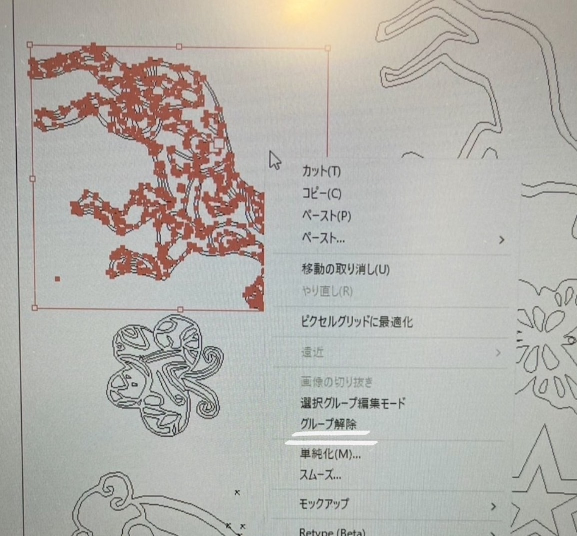
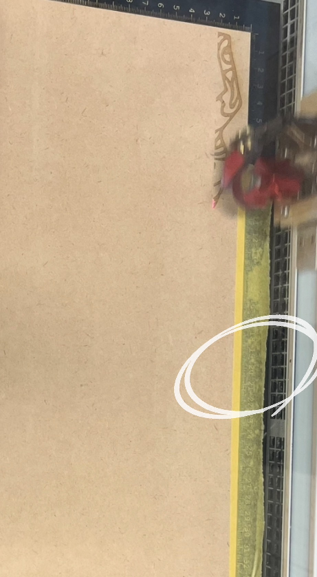
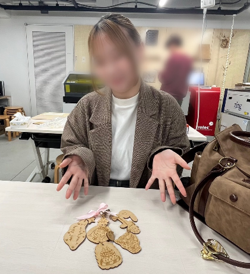

第2回 Computer-Controlled Cutting
☆彡 Above the Clouds 🦄〜
..."雲の上の世界"
「ゆめかわ」をコンセプトに、空想の世界を作り上げた
－完成品の写真－




aiファイルはこちら
－作品の説明－
私が思う幻想的な世界を具現化した作品。
ユニコーンの翼を羽にしたところがポイントであり、風になびかれると実際に走っているかのような
姿を見ることができる。ユニコーンと蝶は彫刻と切り抜きの二種類で作成してみた。
－構想段階のスケッチ・制作過程－



今回の課題である心を動かすものについて考えたところ
日常ではあまり感じない「不思議な気持ち」になる非現実的な世界を作ろうと思った
その中でもファンタジーをコンセプトととし、見た人に「ときめき」や「幸せ」を感じさせる
ものにしようと考えた
「ファンタジー、ゆめかわ」...？
ユニコーン、星、キラキラ、ふわふわ、パステルカラー、虹
↓
木で作れるものをすべて作ろうと思い、合計 このパーツを作成
－実際に人の心を動かしてみた－
Mさん 「ふわふわと動く羽根を見ているとペガサスが空を駆け巡る姿を想像できた！！きれい！」
Sさん 「世界観がある作品だと思った！」
Nさん 「かわいい！立体的でいい！」
Aさん 「雲の上に蝶々っているのかな？！天国?」
Lさん 「空想の世界！こんな世界行ってみたい！！」
－制作プロセスの中で学んだこと－
今回は立体的で複雑なデザインというよりかは、平面的で繊細なデザインだったため、
Fusionでなく、①自分で描いたスケッチを②データにして③イラストレータに取り込み④編集
↑手書きスケッチをデータとして読み込むアプリ

↑イラストレーター内に星を発見 星を使いたいときはここから使うとGood！

一つのまとまりはグループ化で固定する！（右クリックし、グループを選択）

板が反るとうまく彫刻できないので、マスキングテープで上下を補強するとgood!
－感想－
ずっと作りたかった空想の世界を一から作れてとても満足です
今回は、Fusionでなくイラストレーターを使用したので、苦吟した部分もありましたが、とても勉強になりました
早く使いこなせるようになりたいです...
自分で作ったものにたいして様々な嬉しい感想をもらったり、心を動かすことができて、モノ作りの楽しさを実感しました!
〜p.s.〜
なーこちゃんありがとう！！！
